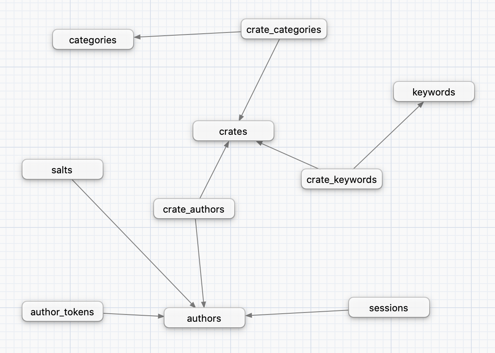

Welcome to Alexandrie

Alexandrie is a modular alternative crate registry for Rust crates.

It implements the Rust's Alternative Crate Registries RFC in order to be usable with Cargo.
It seeks to be modular, extensible and configurable to be usable in many different environments, from a openly-accessible crate store to a private registry in a company's toolchain.
It includes both a programmatic API and an optional server-rendered frontend.
Getting started
How to build
Alexandrie offers multiple options to be used as its database, so before building Alexandrie, you'll need to pick which supported database vendor you wish to use.
The currently supported vendors are:
sqlite: for SQLitemysql: for MySQL (including MariaDB)postgres: for PostgreSQL
To build, you can then run:
cargo build [--release] \
--no-default-features \
--features [frontend] [sqlite|mysql|postgres]
Before running Alexandrie, you'll need to configure your instance in the alexandrie.toml file.
The database is configured through the [database] table:
[database]
# Replace the '<...>' placeholders by the real values.
# For MySQL
url = "mysql://<user>:<password>@<hostname>:<port>/<database>"
# For PostgreSQL
url = "postgresql://<user>:<password>@<hostname>:<port>/<database>"
# For SQLite
url = "<path-to-sqlite-file>"
# or:
url = ":memory:" # ephemeral in-memory database, doesn't persists between restarts
Then, you can configure the crates' tarballs storage strategy and the crate index management strategy that you want to use.
Here is an example of how to do it:
[index]
type = "command-line"
path = "crate-index"
[storage]
type = "disk"
path = "crate-storage"
You can find more information about crate index management and crate stores in the 'What's available' section of this book.
You can also configure things like the address and port of the server:
[general]
addr = "127.0.0.1" # Endpoint on which to serve the service.
port = 3000 # Port on which to serve the service.
To run the registry with the configuration above, be sure to clone your crate index at the location designated by the path key in [index].
In this case, it is ./crate-index.
To clone an existing crate index, you can run:
# Replace the '<...>' placeholders by the real ones.
git clone <url-of-the-crate-index> <path-from-config>
If you want to create one, you can refer to the Cargo's Alternative Registries RFC to learn about the layout of such an index.
You can also visit the crates.io index or the crates.polomack.eu index as deployed examples.
How to run
Once everything is configured, you can run with: cargo run [--release].
Then, if you want to use this index with Cargo, you can follow these steps:
- Edit or create the
~/.cargo/configfile, and add the following code:# Replace the '<...>' placeholders by the real ones. [registries.<name-of-your-registry>] index = "<url-of-the-crate-index>" - Then, run
cargo login --registry <name-of-your-registry>and enter your author token.
To generate a token, you need to register as an author first. You can do this using the frontend by:- Registering at
/account/register. - Generating a token at
/account/manage.
- Registering at
- You can now use the registry using
cargo [search|publish] --registry <name-of-your-registry>
Concepts
This sections covers the different concepts that Alexandrie defines and uses.
The goal of these concepts is to formally define how the different parts of Alexandrie interacts.
Alexandrie can operate with both its crate index and storage on different remote machines and this brings in the need for a well-defined definition of what each of these parts are responsible for.
Alexandrie is built around two principal concepts:
- Crate index: manages metadata about published crates.
- Crate store: stores actual contents of the published crates (code, assets, etc...).
A crate index is a git repository layed out as specified in Cargo's Alternative Crate Registries RFC.
It stores metadata about each stored crate and their versions, but not the contents of the crates themselves.
A crate store is what takes care of storing the crate contents themselves and then making them available for download.
Crate index
The crate index is a git repository where metadata about all the crates managed by a registry is stored.
In a way, it is a snapshot of a registry's knowledge of every crates.
The layout of a crate index is specified in Cargo's Alternative Registries RFC.
Alexandrie will create the directories needed to store a crate automatically, so it suffices to only manually create the config.json file to get going.
The way the crate index is accessed is called a crate index management strategy (a bit of a mouthful, sorry about that 😅).
Strategies will allow Alexandrie to interact with crate indices in a variety of ways, not only locally but potentially remotely (using a litte server on another machine to perform the operation) where the registry itself doesn't have full access to the underlying git repository.
Crate storage
A crate store is the place where all the contents of the published crates (the actual code and assets) are stored.
The contents of crates are stored as TAR archives and compressed using Gzip (basically a .tar.gz blob).
The store takes that blob, stores it and make it available for download later on.
Currently, the store is also responsible for storing rendered README pages (which are simple HTML files).
Because these can amount to a lot of storage space, it can be desirable to separate the crates' metadata (modelled by the crate index) and their actual contents (handled by the crate stores).
A crate store may be local (as files on disk, for instance) or remote (as blobs in AWS S3, for instance).
What's available ?
Currently, not many options are implemented yet.
As index management strategies, we have:
cli: local index clone, managed by invocations of thegitshell command.git2: just likecli, but useslibgit2instead of relying on thegitshell command.- (PLANNED)
remote: remote index clone, managed by a companion server.
As crate storage strategies, we have:
disk: local on-disk crate storage.- (PLANNED)
remote: just likedisk, but on a remote machine, managed by a companion server. - (PLANNED)
s3: stores crates in an AWS S3 bucket.
PSA:
The 'PLANNED' items are ideas that are possible to implement but no guarantees or deadline as to when they would actually land.
Any help on these items are greatly welcome.
Available index management strategies
'command-line': using the shell 'git' command
This index management strategy invokes the shell 'git' command to manage a local clone of the index's repository.
A limitation of this strategy is that it requires the host machine to have the git command installed and available.
Here is an example and description of a configuration using this index management strategy:
[index]
type = "command-line" # required.
path = "crate-index" # required: path of the index's local clone.
NOTE:
The local clone must be present and up-to-date before launching Alexandrie.
Today, Alexandrie won't pull or clone on its own on startup.
'git2': using the libgit2 library
This index management strategy uses libgit2 to manage a local clone of the index's repository.
The advantage of this strategy over 'command-line' is that it doesn't require git to be installed on the host machine.
The repository interaction is completely independant of the local git installation.
Here is an example and description of a configuration using this index management strategy:
[index]
type = "git2" # required.
path = "crate-index" # required: path of the index's local clone.
NOTE:
The local clone must be present and up-to-date before launching Alexandrie.
Today, Alexandrie won't pull or clone on its own on startup.
Available crate stores
'disk': Local on-disk store
This store implements simple local storage of crates as files in a given directory.
Here is an example of a configuration using this storage:
[storage]
type = "disk" # required.
path = "crate-storage" # required: path of the directory in which to store the crates.
Running Alexandrie with Docker
Alexandrie can be run in a Docker container, which can make it easier to start, stop, and build on a non-Linux system.
Dependencies
To run Alexandrie in docker, you'll need:
- The
Alexandriesource pulled from GitHub - docker
- docker-compose
Make sure that docker and docker-compose are in your system path.
User Configuration
A small bit of setup is required before you can start the docker containers. First, copy example.env to .env (the filename is important, don't prefix the extension), and modify the values inside:
- Create a new, empty directory where the application can create data, and then set
APPDATAto the absolute path to that folder. - Set
CRATE_INDEXto the SSH path of an existing git repository with a valid indexconfig.jsonfile. - Set
GIT_NAMEandGIT_EMAILto valid git values that will be used when Alexandrie commits & pushes those commits to the index. - Set
GIT_SSH_KEYto a new or existing passwordless SSH key. The.pubkey associated with this key should be added to github/gitlab/etc. to grant access to clone and push the crate index.
By default Alexandrie will use SQLite. If you want to use either MySQL or PostgreSQL instead, you'll need to create a file at either docker/mysqsl/rootpass.txt or docker/postgresql/rootpass.txt which contains the password that will be given to the root user of the database.
Additional Configuration
If necessary, alexandrie.toml and even diesel.toml can still be modified, and the docker images can be configured to use those modified files instead. You should read the Internals section first, and will likely need to already have docker knowledge. Some other config files and scripts will need to be modified if you change Alexandrie's port or appdata mount location, for example.
Usage
Running
To run, you can use the run_docker.sh script for easy setup or teardown. See run_docker.sh --help for a list of options.
By default, Alexandrie will use SQLite and run in the background.
Bringup
./run_docker.sh up
If you want to use MySQL and run in the foreground, here's an example:
./run_docker.sh up --mysql -f
If you run in the foreground and kill the services with Ctrl+C, the docker containers will stop, but you still may need to run teardown for the containers to be deleted fully.
Stopping and Cleanup
Stopping Alexandrie is as easy as starting it.
Teardown
./run_docker.sh down
To stop, for example, a MySQL setup for Alexandrie, run the following:
./run_docker.sh down --mysql
If you're not planning on running Alexandrie again or want to do a full clean of the environment, you can disassociate your local appdata storage from the docker volume database by doing docker volume prune, which will delete all unused volumes.
Next Steps
As Alexandrie will (by default) serve on port 3000 (and directly setting that to port 80 will likely not work for a non-root user and won't allow https), the recommended way to serve the application would be to install & configure nginx or another ingress controller.
Internals
The run_docker script is using docker-compose under the hood, which is itself just docker instrumentation. docker-compose is configured for this project through a few files:
.env: contains variables that can be changed by the user for easy configurationdocker-compose.yaml: basic setup for docker images, volumes, etc.; should rarely be touched by the userdocker/<database>/<database>-compose.yaml: supplemental and database-dependent; should rarely be touched by the user
Some additional files are responsible for actually creating the Docker image for Alexandrie, as well as handling starting the application, database, etc.:
Dockerfile: definition for creating the Docker image for Alexandrie itselfdocker/startup.sh: ran inside the Docker image to do first-run database initialization with diesel, ssh & git configuration, and start Alexandriedocker/<database>/alexandrie.toml: application configuration, which has database-dependent features
Modifying alexandrie.toml may require additional modification of some of these files, for example if the port is modified.
It's worth mentioning that the Docker image will copy the Alexandrie source contained in the local directory, a.k.a. the source isn't pulled down from the git repo when building the image. If you modifiy the source code, those modifications can be used to make the image for testing, etc.
Example Run
To start Alexandrie in Docker without the run_docker script, you could do:
export DATABASE=mysql
docker-compose -f docker-compose.yaml -f docker/mysql/mysql-compose.yaml up
This will use all of the following files, in addition to the Alexandrie source code:
docker-compose.yaml.envdiesel.tomlDockerfiledocker/startup.shdocker/mysql/mysql-compose.yamldocker/mysql/alexandrie.tomldocker/mysql/rootpass.txt
Database
Databases will put their data in an appropriately named directory inside the user-defined APPDATA directory (see User Configuration). If the directory already exists, it must either (a) have valid database data inside, or (b) be empty. Directly modifying files inside the database directory isn't recommended, and can cause the server to fail to start entirely. Don't add extra files or create a file inside an empty database directory; the database will almost certainly complain.
Database layout
This page describes the database tables that Alexandrie uses.
The types of the tables' fields are chosen to be compatible with all the database vendors supported by Alexandrie.
Here is a high-level picture of the different tables and their relationships:

The crates table stores metadata about the latest version of each stored crate.
It is meant to store the most useful metadata for fast access.
If more complete metadata is required or metadata about an older version is needed, the crate-index can be queried for this.
The authors table stores the list of every registered crate authors of the registry.
It stores details like emails, fullnames and a signature of the author's password.
Details about what this signature really is, and how to compute it from the users' password is available at:
https://polomack.eu/alexandrie-security
The keywords and categories tables store the keywords and categories used by the registry's crates.
The keywords table can gain new entries as crates makes use of new distinct keywords.
The categories table, on the other hand, is fixed and not expandable by crates.
The salts table stores the salts generated for each registered author and used to compute their passwords' signatures.
The sessions table stores details about the frontend sessions for registered authors.
Sessions are not automatically deleted when expired, so a cleanup periodic clean may be required to prune expired sessions.
The author_tokens tables stores the generated Cargo authentication tokens for registered users (used for cargo login).
The crate_categories, crate_keywords and crate_authors are all one-to-many relationship tables.